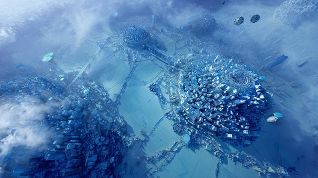

Where you go when you leave
Fourteen poems, one page each: the poem, the best of our footage, the cast with their kits, the props in every state, the places as layers, and every kit to generate.

Out of Life
A dim high-rise bedroom where a man reads a poem to a back that will not turn around: the EX on the fire escape, vaping, while the haze eats the room left to right and the window slides away from every step toward it. Then two bodies fall past streaking towers with a gap between them that breathes and never closes, through a slow-motion vintage party and a hole in its floor, until the only light left in the film is the vape ember, a blue speck on black.

Flashing Lights
A silent scream: a scream whose rings travel inward. The man floats in black while walls cave on him, wakes after midnight to a phone that rings twice and a mirror that answers his hand exactly, then his pupil opens and we go through it into a winter living room where he is six, a dead seven-year-old stands one pencil notch taller, his parents argue in a car with its hazards flashing, and he throws the tambourine she gave him through the glass.

How to break off an engagement
The tambourine thrown through the window in 02 tumbles through black and sails in through a chapel's rose window, still whole, into an empty temple: empty choir stands, empty prayer lines, a dry baptism pool. In time-lapse the cobwebs are built, the pews go, the wedding gifts left at the side doors are split by lightning, bread rots in the rain and blankets hang from puppet strings with nobody on them; then the storm lifts, two sets of mud footprints walk away out of step, and the tambourine finally lands on the shore and shatters.

Nevermore
One trail followed twice, each time ending in a body part taken back and sworn over. On a night shore of ash and tambourine pieces, a man in red and black with his hands in his pockets and a hollow chest finds his own heart throbbing in the sand; it floats up and re-enters him, and he says nevermore. He follows it up an incline into a moonlit garden where faith scatters as mustard seeds and golden blooms turn to face him, and in the deepest dark he finds his two hands palm-down on bare ground, puts them back on, stands, and says it again.

Bloodlines
Still night: the poet walks out of the Nevermore field into a parade of afro-futurist ancestors who put stars in his hands, and he names them one by one until they are a constellation of his kin. The same nine-point constellation comes back as the Southern-pine joists over the basement mattress he grew up on, as the veins of blood-light in his fingerprint, and as the veining in the marble wings of a gate that finally opens. It is a poem about inheritance getting bigger: a small man under a wide sky becomes a print too big for the frame, then a gate that runs off all four edges.

Resurrecting Atlantis
Generations walk a yellow-brick causeway out over black water toward a drowned city whose spire tips barely break the surface, while comets carry souls to the capital dome. The waterline falls once across the whole poem and the city comes up streaming, neon and vines on wet marble; the poet pays a glowing coin at the admission booth, walks candlelit narrow streets where music throws rainbows on the walls, and stands in the plaza while every window lights and a crowd raises its arms. It is the suite's one utopia: populated on purpose, and ending at the door of a house party.

DJ Turn Me Up
A full house party in an Atlantis house: the DJ drops onto the decks and scratches, and the poet, standing at the bar as in the part 1 reading video, eyes shut and chin pressed down under the weight of his words, tells the love story while a projection wall behind him shows it: ghosts walking out of a dying vineyard, two wedding bands drifting apart, a house trucked off down one-way streets, eleven petals plucked off a daisy, three roads. The whole poem is one climb in volume: starved at the start, turnt up at the end, chin high, the room erupting.

Newly Single
He leaves the party for an open-air rooftop club over Atlantis, all strobes and blue-pink light, where the dancers smear in shifted time and he stands still and empty. His soul, a glowing see-through copy of him, peels out and floats up, watches the whole city lit below, is set down on a white-hot plain at the equator of a giant planet, and is cooled by angels pouring ice baths; back in the club the same water lands on his body under the strobe. Haze fills the room, the soul comes home, he leans back and breathes it in, and ends on the ledge staring at far mountains, then walks out into a street where he glimpses the EX's back and cannot reach him.

Yet, Heard
Three calls made at the edge of a harbour before leaving: to the lover under a shared moon, to the mother over a black hole that opens in the water, to the father who walks out of the eastern sky. One night on one quay, and the light is the clock: moon high, the dead hour, first grey, the sun coming up out of the harbour mouth. Each call is a dashed line of light strung between two people, and behind every call the same breakup keeps playing on the sidewalk.

Magic Ride
Alone on the sidewalk after the breakup, the poet finds a motorcycle he wasn't looking for, rubs his aggressions into its steel and rides. The bike holds frame centre and the world streams past it: neon Atlantis, rows of heads that turn, the city's last towers, then mountains, while the night is replaced by morning one dot at a time. He arrives, chilled and innocent, at a ruined chapel on the shore.

New Day
The poet dismounts at a ruined chapel on a foggy shore and, as the morning comes, a new temple builds itself with him: white, clean, modern, counted into being piece by piece. He walks laps round its edgeless pool, reads from a journal, walks on the still sea, and in the last movement the sun clears the ridge and a line of light runs across the valley to the finished temple and to him.
Reunion
Decades later, the poet hosts his brothers and friends in the white temple he built in 11: hugs with no reason, laughter, football on a wall screen, an old snapshot restaged. Underneath the noise one quantity only grows, the distance between two brothers, from a hug to talking distance to the width of a memory, while a yard of burning hourglasses goes out one by one until a single one is left, and its last ember drifts out over the sea through the gap the wind opened.

How to Win My Heart
The poet walks down from the white temple to a corner café on the harbor of the heavens and sits at a small table, watching couples, while the tide comes in under the boats. Dusk counts out Jupiter's moons over the water; his younger self watches from the rail, the elders pray with their pearls, and his love letters burn on the quay stones. He harvests a field of scarlet poppies and purple blossoms until it flowers out of his own arms, and then, across the water, a distant window comes into focus with a woman in it, and he takes off his sunglasses and says hello.
Hot Minute
The finale. Haze gathers on the water and climbs, and everything the poet built, the city, the temple, the harbor, becomes weather; then it takes him last, from the feet up, while he resists. He floats again in the black of 01, but there are no walls this time, and his life flashes past as a reel of the suite's own motifs. Two of him dance and land the spin as a victory, and an old vintage door appears in the black. He opens it on a slow-motion party, the kind he once fell out of a window to escape, walks into the crowd, and the door closes.